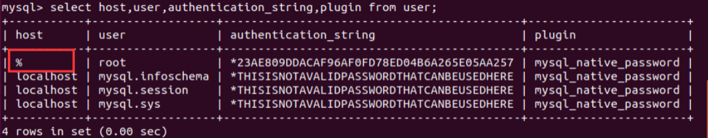

1. 附录
1.1. Linux密码修改
sudo passwd
1.2. MySQL修改密码
ALTER USER "root"@"localhost" IDENTIFIED BY "你的新密码";
1.3. MySQL设置远程连接
使用mysql数据库输入：
use mysql
执行命令为：
select host,user,authentication_string,plugin from user;
root 用户的 host默认显示的 localhost，说明只支持本地访问，不允许远程访问。
执行命令为：
update user set host='%' where user='root';

刷新
执行命令为：
flush privileges;